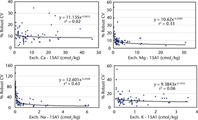
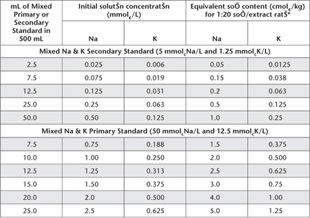

15A1 Exchangeable bases (Ca2+, Mg2+, Na+, K+) – 1 M ammonium chloride at pH 7.0, no pre-treatment for soluble salts
This method enables the reasonably speedy extraction/determination of the exchangeable bases in soil. It is used mainly in assessments of soil fertility and as part of the determination of ECEC. There is no pre-treatment to remove soluble salts or suppression of carbonate dissolution. Consequently, it is not usually recommended for saline, calcareous or gypsiferous soils. Modifications of this method are available when overestimates due to the presence of soluble salts are expected; see Methods 15A2 and 15A3.

Figure 15.1 Soil exchangeable cation concentrations (Ca2+, Mg2+, Na+, K+) by method 15A1 vs % robust CVs.
Soils are equilibrated with 1 M NH4Cl at pH 7.0 for 1 h with mechanical shaking at a soil/solution ratio of 1:20. The suspensions are clarified and analysed for exchangeable bases. Procedures for Ca2+, Mg2+, Na+ and K+ based on ICPAES (preferred) or AAS are described. Alternatively, Na+ and K+ may be determined by FES.
Measurement performance across-laboratories for Method 15A1 is available from interlaboratory proficiency programs of ASPAC from 1997–2007. How robust co-efficients of variation vary continuously with increasing concentrations of the basic exchangeable cations are shown in Figure 15.1. The data were sourced from laboratories across Australasia (e.g. Peverill and Johnstone 1997; Rayment et al. 2007). Significant trends are emerging for exchangeable Na+ and exchangeable Mg2+.
Reagents
Extracting Solution – 1 M Ammonium Chloride at pH 7.0
Dissolve 535 g ammonium chloride (NH4Cl – low in Ca, Mg, Na and K impurities) in deionised water and dilute to 9 L. Adjust to pH 7.0 by adding ammonium hydroxide (NH4OH). Wash the electrodes of the pH meter thoroughly before placing them in the Extracting Solution, otherwise K+ salts from the calomel electrode may cause contamination.
Make the volume to 10 L with deionised water and store in sealed containers. Plastic containers are preferred, however borosilicate glassware may be substituted; soda-glass should not be used.
5 M Ammonium Chloride at pH 7.0
Dissolve 267.5 g NH4Cl (identical to that used for the Extracting Solution) and dilute to 900 mL. Adjust to pH 7.0 as described for the Extracting Solution and make to 1.0 L.
Strontium Chloride Solutions (only required if using an AAS analytical finish)
Sr Stock Solution
1 L contains 8.33 g of Sr.
Dissolve 25.35 g strontium chloride (SrCl2.6H2O) and dilute to 1 L with deionised water. Store in plastic or borosilicate bottle.
Sr Working Solution
1 L contains 1.67 g of Sr.
Dilute 200 mL Sr stock solution to 1 L with deionised water. Store in a plastic or borosilicate bottle.
Sr Diluting Solution for Ca and Mg Analysis by AAS
1 L contains 1.50 g of Sr.
Add 180 mL Sr stock solution to 100 mL 1 M NH4Cl Extracting Solution (identical to that used for soil extractions) and dilute to 1 L with deionised water.
Wetting Agent – Brij 35
As for Method 5A2.
Lithium Chloride for Automated Na+ and K+
Dissolve 0.11 g lithium chloride (LiCl), add 1 mL Brij 35 Wetting Agent (see Method 5A2), and make to 1 L with deionised water.
Mixed Ca and Mg Primary Standard
1 L contains 100 mmolc of Ca and Mg.
Use certified commercial standard concentrates or dry calcium carbonate (CaCO3, Primary Standard grade) by heating at 110°C to constant weight. Also dry magnesium oxide (MgO, heavy) by heating in an electric muffle furnace at 600–700°C for 2 h. Cool, and store the chemicals in a desiccator without desiccant.
Weigh 2.0152 g MgO and 5.0045 g CaCO3 and wash into a 1 L conical flask with about 50 mL deionised water. Add 240 mL 1 M HCl and boil until all CO2 is expelled. Cover and allow to cool, then transfer quantitatively to a 1 L volumetric flask. Dilute to volume with CO2-free (boiled) deionised water and mix well. Transfer to a clean plastic bottle. Should MgO not assay at 100% purity, adjust the weight according to the assay obtained.
Mixed Na and K Primary Standard
1 L contains 50 mmolc of Na and 12.5 mmolc of K.
Use certified commercial standard concentrates or dry sodium chloride (NaCl) at 105°C for 2 h and potassium chloride (KCl) for 2 days at 115–120°C. When dry, cool and store in a desiccator without desiccant. Weigh 2.9221 g NaCl and 0.9319 g KCl and dissolve separately with deionised water. Transfer quantitatively to a 1 L volumetric flask and make to 1.0 L with deionised water. Store in a clean plastic bottle.
Mixed Ca and Mg Secondary Standard
1 L contains 10 mmolc of Ca and Mg.
Take 50 mL of Mixed Ca and Mg Primary Standard and dilute to 500 mL in a volumetric flask with CO2-free (boiled) deionised water. This solution should be freshly prepared each time Working Standards are required.
Mixed Na and K Secondary Standard
1 L contains 5.0 mmolc of Na and 1.25 mmolc of K.
Take 50 mL of Mixed Na and K Primary Standard and dilute to 500 mL in a volumetric flask with CO2-free deionised water. This solution should be freshly prepared each time Working Standards are required.
Mixed Working Standards for Exchangeable Bases
Dispense Mixed Ca and Mg Primary or Secondary Standards, as indicated in Table 15.3 and Mixed Na and K Primary Standards as indicated in Table 15.4, into 500 mL volumetric flasks. Add 100 mL 5 M NH4Cl to each and dilute to 500 mL with CO2-free deionised water.
Procedure
Weigh 5.00 g of air-dry soil (<2 mm) into a 250 mL plastic extracting bottle and add 100 mL 1 M NH4Cl at pH 7.0 Extracting Solution. Stopper securely and mechanically shake end-over-end at ≈25°C for 1 h. Centrifuge or filter soil extracts. If filtering, prepare Whatman No. 40 filter papers in 75 mm plastic funnels and place suitable clean, dry, receiving containers
*Dilute 1 part Working Standards and sample extracts with 9 parts Sr Working Solution if analysing by AAS. For ICPAES, substitute the Sr Working Solution with NH4Cl Extracting Solution.
†AAS analysis requires accurate 1:5 dilution of samples already diluted 1+9 with Sr Working Solution. Use Sr Diluting Solution for Ca and Mg Analysis by AAS (1 L contains 1.50 g Sr) as diluent. Working Standards already diluted 1+9 should not be further diluted.
††For ICPAES analysis, substitute the Sr Working Solutions with NH4Cl Extracting Solution.
Table 15.4. Examples of dilutions and concentrations for Na and K Working Standards – 1 M NH4Cl at pH 7.0.

*If necessary, dilute extracts of high concentration with 1 M NH4Cl Extracting Solution to bring these within the optimum range of the instrument, and to maintain the same concentrations of NH4Cl in standards and sample extracts.
Determination of Ca2+, Mg2+, Na+ and K+ by ICPAES
Set up and operate the ICPAES instrument as advised by the manufacturer. Suitable wavelengths are: Ca = 430.25 nm; Mg = 285.21 nm; Na = 588.96 nm; and K = 766.49 nm. Calibrate the instrument using an appropriate range of Working Standard Solutions, guided by examples in Tables 15.3 and 15.4. The 1:20 soil/extraction ratio can be factored into the calibration on the ICPAES. A reagent blank should also be measured and adjustments made as necessary.
Determination of Ca2+, Mg2+, Na+ and K+ by AAS
Follow manufacturer’s recommendations with respect to instrument parameters; an air-acetylene flame is usual for all elements; preferred spectral lines are: Ca = 422.7 nm; Mg = 285.2 nm; Na = 589.0 nm; and K = 766.5 nm. Ca2+ and Mg2+ are measured on diluted extracts, whereas, extracts for Na+ and K+ analysis are only diluted if over range. A reagent blank should also be measured and adjustments made as necessary.
For Ca2+ and Mg2+, dilute each soil extract and each Ca and Mg Working Standard with Sr Working Solution as indicated in Table 15.3, noting that Sr is included to suppress interferences in measurement due to phosphate and other ions (MacPhee and Ball 1967). Should Ca2+ and Mg2+ concentrations be above the optimum range of the instrument, dilute samples only as indicated in Table 15.3. Mix well, then determine Ca2+ and Mg2+ concentrations directly, adjusting as necessary for the relevant dilution.
For measurement of Na+ and K+ by AAS, use a selection of Working Standards (Table 15.4). Determine concentrations of Na+ and K+ in soil extracts directly from the instrument. Settings and operation of the instrument should be checked periodically.
Automated Na and K
This is a reliable alternative analytical finish when laboratories have suitable instrumentation. Ensure individual components of the Na/K automatic analyser are connected in accord with manufacturer’s instructions. A typical continuous segmented-flow manifold for a Technicon™ Dual Channel IV Flame Photometer is shown in Figure 15.2; LiCl solution is used as an internal reference.
Prior to commencement of each run, after reagents and deionised water (plus 0.20 mL/L Brij 35) wash solution have been circulating for at least 20 min, ‘condition’ the manifold and check instrument settings by pumping the highest working standard required for several min.
Determine concentrations of Na and K in the soil extracts directly [cmolc/kg] from calibration curves drawn from Working Standards (Table 15.4) run on commencement, after at least every 30 soil extracts, and on completion. A reagent blank should also be measured and adjustments made as necessary.
Reporting
Report exchangeable Ca2+, Mg2+, Na+ and K+, respectively (cmolc/kg) on an oven-dry soil basis. Use the air-dry moisture to oven-dry moisture ratio to make the oven-dry conversion. Refer to Method 2A1 for guidance with regard to this soil moisture calculation.
Table 15.3. Examples of dilutions and concentrations for Ca and Mg Working Standards – 1 M NH4Cl at pH 7.0.
|
|
Equivalent soil content (cmolc/kg) of Ca & Mg, respectively, for 1:20 soil/extract ratio(final) following: |
mL of Mixed Primary or Secondary Standard in 500 mL |
Initial solution concentraioon (mmolcCa & Mg/L) |
1 + 9 diluion* of samples and standards |
1 + 49 dilution† †† of samples;
1 + 9 dilution of standards |
Mixed Ca & Mg Secondary Standard (10 mmolcCa & Mg/L) |
2.5 |
0.05 |
0.1 |
0.5 |
5.0 |
0.10 |
0.2 |
1.0 |
7.5 |
0.15 |
0.3 |
1.5 |
12.5 |
0.25 |
0.5 |
2.5 |
25.0 |
0.50 |
1.0 |
5.0 |
50.0 |
1.00 |
2.0 |
10.0 |
Mixed Ca & Mg Primary Standard (100 mmolcCa & Mg/L) |
7.5 |
1.5 |
3.0 |
15.0 |
10.0 |
2.0 |
4.0 |
20.0 |
12.5 |
2.5 |
5.0 |
25.0 |
15.0 |
3.0 |
6.0 |
30.0 |
20.0 |
4.0 |
8.0 |
40.0 |
25.0 |
5.0 |
10.0 |
50.0 |

Figure 15.2. Continuous segmented flow manifold for Na+ and K+ in 1 M NH4Cl soil extracts.